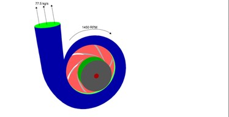

Modelling fluid flow through a centrifugal compressor.
Introdcution: A centrifugal pump is a mechanical device designed to move a fluid by means of the transfer of rotational energy from one or more driven rotors, called impellers. Fluid enters the rapidly rotating impeller along its axis and is cast out by centrifugal force along its circumference through the impeller’s vane tips. The action of the impeller increases the fluid’s velocity and pressure and directs it towards the pump outlet. The pump casing is specially designed to constrict the fluid from the pump inlet, direct it into the impeller and then slow and control the fluid before discharge..
Working: The impeller is the key component of a centrifugal pump. It consists of a series of curved vanes. These are normally sandwiched between two discs (an enclosed impeller). Fluid enters the impeller at its axis (the ‘eye’) and exits along the circumference between the vanes. The impeller, on the opposite side to the eye, is connected through a drive shaft to a motor and rotated at high speed (typically 500-5000rpm). The rotational motion of the impeller accelerates the fluid out through the impeller vanes into the pump casing. There are two basic designs of pump casing: volute and diffuser. The purpose in both designs is to translate the fluid flow into a controlled discharge at pressure. In a volute casing, the impeller is offset, effectively creating a curved funnel with an increasing cross-sectional area towards the pump outlet. This design causes the fluid pressure to increase towards the outlet. The same basic principle applies to diffuser designs. In this case, the fluid pressure increases as fluid is expelled between a set of stationary vanes surrounding the impeller. Diffuser designs can be tailored for specific applications and can therefore be more efficient. Volute cases are better suited to applications involving entrained solids or high viscosity fluids when it is advantageous to avoid the added constrictions of diffuser vanes. The asymmetry of the volute design can result in greater wear on the impeller and drive shaft.
Problem Statement: : In this project, I will setup a general fluid flow simulation to evaluate the performance of a centrifugal pump with a volute. The pump impeller has 5 blades and rotates at a velocity of 1450 RPM. The mass flow rate at the volute outlet is known to be 77.5 kg/s. A gauge total pressure of 0 pa is used at the inlet. The simulation will be performed to determine the head generated by the pump, repres entering the overall pressure increase of the fluid.
Problem Figure.
Solution and Post Processing: : The head generated by the pump is approximately 21m from Fluent calculations. .